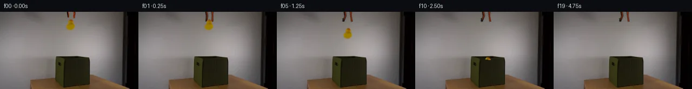

![首帧]()

Round 00
2026-11-04T23:33:53.162728+00:00像素候选变化代码 +203/−0inspection 更新
pixels 21cf4005329bee0f · code 6a5d2809d6302d5d
查看本轮 generate.py 真实 diff
--- previous/generate.py
+++ current/generate.py
@@ -0,0 +1,203 @@
+#!/usr/bin/env python3
+"""Generate the 20-frame locked-camera duck release sequence."""
+
+from pathlib import Path
+
+import numpy as np
+from PIL import Image, ImageDraw, ImageFilter
+
+from artifact_io import save
+
+
+ROOT = Path(__file__).resolve().parent
+W, H = 256, 144
+
+
+def clean_action_plate(source: Image.Image) -> Image.Image:
+ """Remove the original suspended objects with row-wise wall interpolation."""
+ a = np.array(source, dtype=np.float32)
+ out = a.copy()
+
+ # The action is isolated on an untextured wall. Interpolate between robust
+ # uncontaminated strips on each side, retaining the wall's vertical gradient.
+ x0, x1 = 119, 143
+ for y in range(0, 39):
+ left = np.median(a[y, 114:119], axis=0)
+ right = np.median(a[y, 144:149], axis=0)
+ for x in range(x0, x1 + 1):
+ q = (x - x0) / (x1 - x0)
+ fill = left * (1.0 - q) + right * q
+ # Feather just the two boundary pixels into untouched source.
+ edge = min(1.0, min(x - x0 + 1, x1 - x + 1) / 2.0)
+ out[y, x] = a[y, x] * (1.0 - edge) + fill * edge
+ return Image.fromarray(np.clip(out, 0, 255).astype(np.uint8), "RGB")
+
+
+def extract_duck(source: Image.Image, plate: Image.Image) -> Image.Image:
+ """Recover a compact antialiased duck sprite from the supplied first frame."""
+ box = (121, 12, 140, 36)
+ s = np.array(source.crop(box), dtype=np.float32)
+ b = np.array(plate.crop(box), dtype=np.float32)
+
+ # Yellow/orange chroma is cleanly separated from the nearly neutral wall.
+ # Estimate fractional coverage from yellow-vs-blue separation, smooth it,
+ # and unmix the wall so transformed edges do not acquire a gray halo.
+ alpha = np.clip((s[..., 1] - s[..., 2] - 1.0) / 53.0, 0.0, 1.0)
+ alpha *= np.clip((s[..., 0] - s[..., 2]) / 75.0, 0.0, 1.0)
+ alpha[:1] = 0.0
+ am = Image.fromarray(np.uint8(alpha * 255), "L").filter(
+ ImageFilter.GaussianBlur(0.32)
+ )
+ alpha = np.array(am, dtype=np.float32) / 255.0
+
+ safe = np.maximum(alpha[..., None], 0.08)
+ fg = (s - (1.0 - alpha[..., None]) * b) / safe
+ fg = np.clip(fg, 0, 255)
+ rgba = np.dstack((fg, alpha * 255.0)).astype(np.uint8)
+ rgba[rgba[..., 3] == 0, :3] = 0
+ return Image.fromarray(rgba, "RGBA")
+
+
+def draw_grabber(openness: float) -> Image.Image:
+ """Draw the suspended orange/black grabber with antialiased jaws."""
+ scale = 4
+ layer = Image.new("RGBA", (W * scale, H * scale), (0, 0, 0, 0))
+ d = ImageDraw.Draw(layer)
+
+ def poly(points, fill):
+ d.polygon([(round(x * scale), round(y * scale)) for x, y in points], fill=fill)
+
+ # Jaw tips splay out from their cropped pivots as the tool releases.
+ left_tip = 127.0 - 4.1 * openness
+ right_tip = 136.0 + 3.2 * openness
+
+ # Left arm: black outer casing with burnt-orange inner metal.
+ poly([(123.3, -2), (127.0, -2), (128.7, 7.2),
+ (left_tip + 1.6, 18.0), (left_tip - 1.4, 18.0), (125.0, 7.8)],
+ (18, 14, 12, 255))
+ poly([(125.5, -2), (127.1, -2), (127.9, 7.0),
+ (left_tip + 1.25, 15.0), (left_tip + 0.15, 15.5), (126.4, 6.6)],
+ (137, 48, 11, 255))
+ # A small dark gripping pad remains visible at the left tip.
+ d.line([(round((left_tip - 0.4) * scale), 12 * scale),
+ (round((left_tip - 0.7) * scale), 18 * scale)],
+ fill=(24, 20, 18, 255), width=2 * scale)
+
+ # Right arm: orange face and dark rear edge.
+ poly([(134.7, -2), (138.5, -2), (138.2, 8.0),
… diff truncated; 116 more lines …